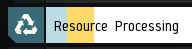

Tutorial
This website is created for personal use only, regular maintainance is not guaranteed and Misaka is not reponsible for any loss resulting from using this website!
Check for skill attributes:
1. Click on the top left concer for your skills and locate the Resource Processing category.
2. Enter skill values to Yield Calculator accordingly.
3. Locate on the top left concer for your Space Security Level and enters to Yield Calculator accordingly.
4. For Structure and Rigs, consult your structure manager or enter your desire value.
5. To get yields, from your ores inventory, click on single item and press Ctrl+a to select all, then press Ctrl+c to copy your ores.
This can be done in either grid form or list form.
Sample Input(grid inventory):
Sample Input(list inventory):